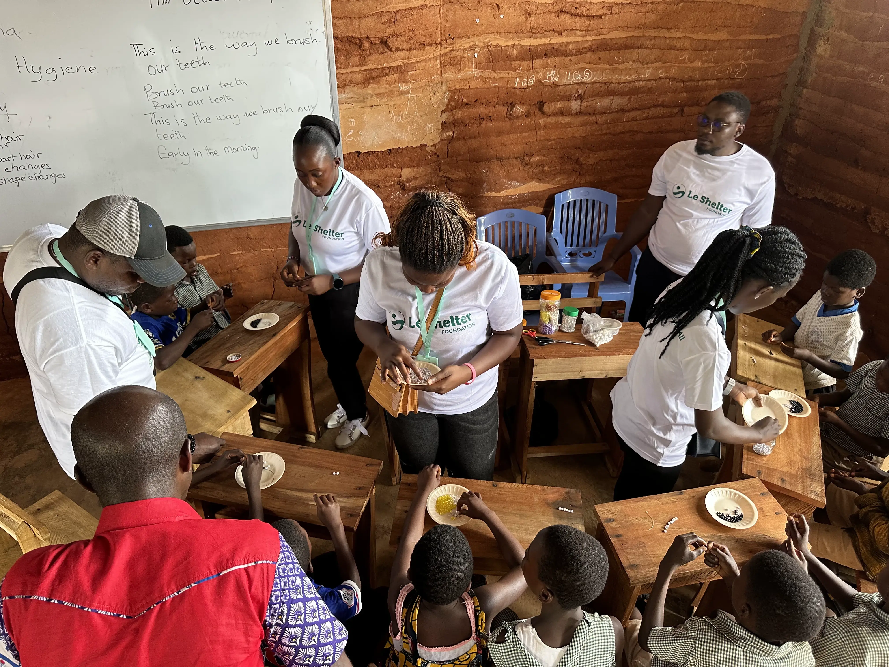

School support
School supportDream ~ Learn ~ Achieve
Creating an inspiring learning environment at Anyirawase D/A JHS in the Volta Region.
Read the storyBecome a volunteer
COMMUNITY EVENT
This initiative reflects Le Shelter Foundation's commitment to empowering children and supporting underserved communities through education. At Anyirawase D/A JHS in the Volta Region, the project aims to create a supportive learning environment where students can dream boldly, learn confidently and achieve their potential.
Have another way to support this project?
Talk to our team →Opportunity in action
School supportCreating an inspiring learning environment at Anyirawase D/A JHS in the Volta Region.
Read the story Education
EducationLearning materials, hands-on workshops and mentorship to help students see new possibilities.
Read the story Community
CommunityPractical support and educational activities for Asutsuare Estate D/A School.
Read the story
School supportSupporting learning resources and school facilities in Samraboi, Western Region.
Read the story Community
CommunityWorking alongside the community to support children and their learning environment.
Read the story Mentorship
MentorshipGuidance, interactive workshops and encouragement to nurture young people?s ambitions.
Read the storyClient section

Through our school supply donation drives, I've witnessed firsthand the joy on children's faces when they receive the tools they need to succeed in their education. It's heartwarming to know that we're not only providing tangible resources but also inspiring hope in these young minds.

Joining Le Shelter Foundation as a volunteer has been an eye-opening experience. Le Shelter Foundation has not only empowered the communities we serve but has also empowered me with a renewed sense of purpose and a deeper understanding of how small efforts can create significant change.

I’ve had the chance to connect with students from rural areas and help guide them in making informed decisions about their futures. LSF has not only benefited the communities but has also given me the opportunity to grow as a mentor and leader.

LSF is more than just an NGO, it is a family of people united by a shared mission to bring hope and support to those in need. Volunteering here has opened my eyes to the challenges many communities face and has inspired me to become more compassionate and socially responsible.

Volunteering with Le Shelter Foundation has been a truly transformative experience for me. From the very first outreach program I participated in, I could see the genuine passion and commitment the organization has towards helping vulnerable communities.
Give your time. Share your skills. Help a child learn.
Join the people turning care into opportunity in communities across Ghana.
Get involved ↗Your questions, answered
Want to volunteer, contribute learning materials or partner on a school project? There is a place for you here.
Learn how to helpYou can donate towards school supplies, share your time as a volunteer or discuss an in-kind contribution. Contact our team to understand current needs and arrange your support.
Visit our contact page and tell us about your interests, skills and availability. Our team can help you find a practical way to contribute.
We support children in rural Ghana, working with schools and communities including Asiafo Amanfro, Asutsuare, Ayensukrom, Apewosika and Anyirawase.
Yes. We welcome conversations about school resources, mentorship, professional skills and community partnerships. Get in touch to discuss how we can work together.